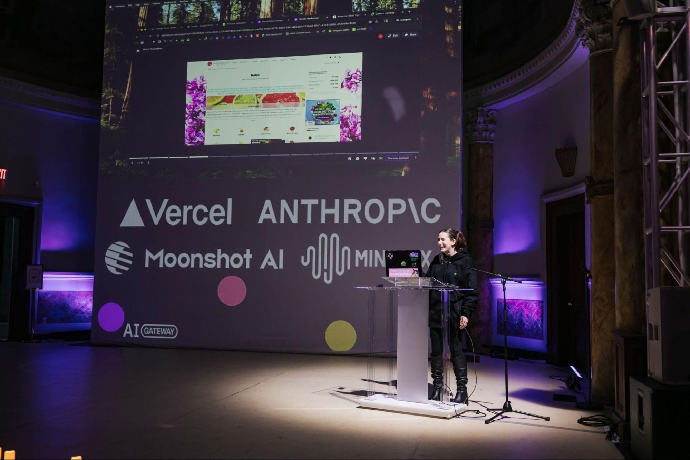
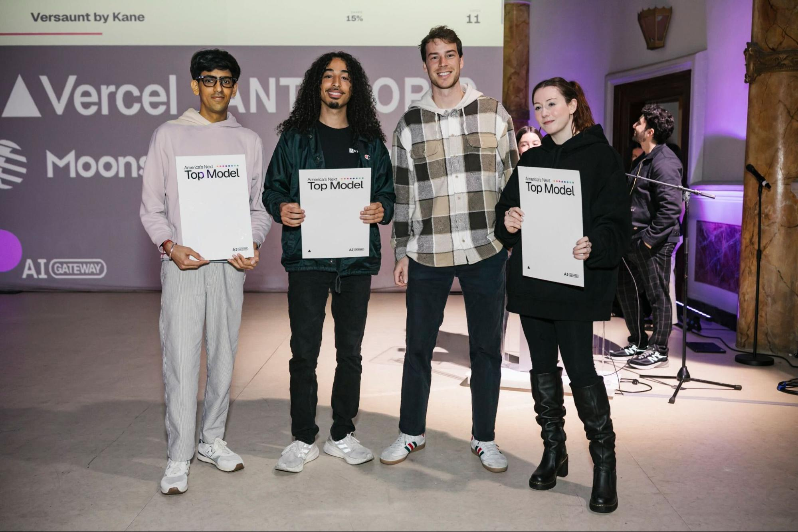
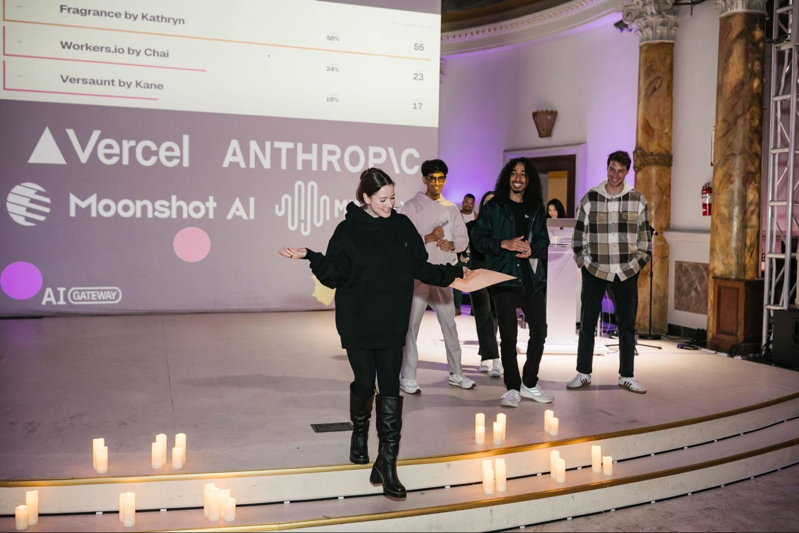
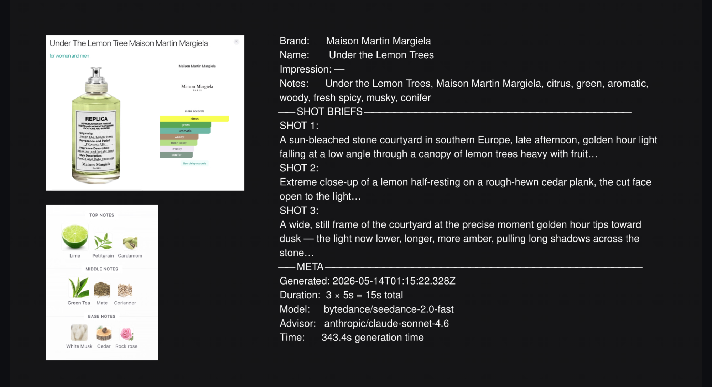
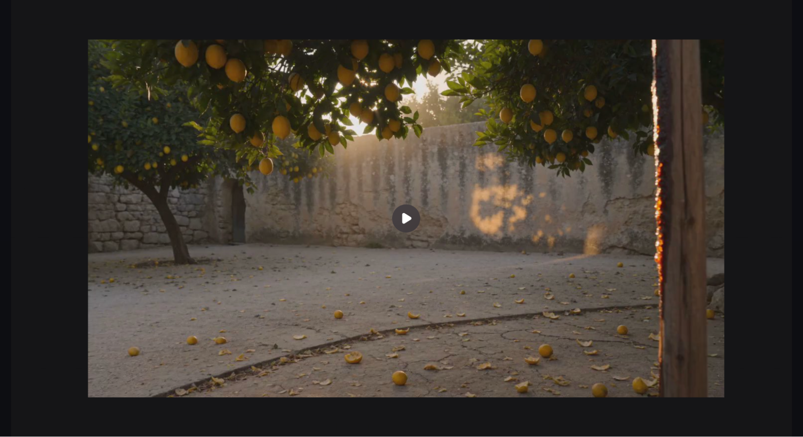

I'm joining the war on slop on the side of the slop
An embarrassment of slop tokens
Through a series of silly and redacted events, I was invited by Vercel to compete in one of eight on-stage
demo spots at
their hackathon entitled "America's Next Top Model" in May of 2026.

Photo by Vercel
As a software engineer who works in San Francisco, who is also a woman and not afraid to be weird in
public, this was
not an entirely unlikely place for me to find myself.
The hackathon was designed to promote Vercel's multi-agent tool "AI Gateway," which allows users to access
many AI
models from different providers trained to produce text, images, video, or audio, through one API. The
prompt was to use
more than one model, one as the "the advisor: a frontier model that plans, decides, critiques" and one as
"the executor:
a smaller, faster model that does the work at scale."
I had waffled on even submitting the application, and came up with my idea to satisfy the hackathon prompt
when my
on-stage demo spot was secured that day. Because I was already familiar with using AI for coding (detailed
in my
previous blog post Declaring Clankruptcy) and for generating text in
creative workflows (more on that
later), I wanted
to branch out and try using a video model.
When I got to the venue and started talking to the other presenters during the sound check, I realized I
was probably
the only person who was building a creative workflow and not a vibecoded AI B2B SaaS product. I figured I
was either
going to look really silly, or I was going to win.


Photos by Vercel
(I won.)
I won by making pure tasteslop, and I found out the next day what the first prize was: $12,000 in AI
credits only usable
in the Vercel AI Gateway.
With this embarrassment of slop tokens appearing in my account, Vercel essentially fully funded my further
experiments
in AI slop generation for the foreseeable future.
So I have been thinking a lot about slop (writ large), tasteslop (the discourse and culture war around AI
generation in
general and whether using AI, particularly in creative fields, is inherently immoral and tasteless), and
what I plan to
continue to do with my filthy token lucre.
What I built and why it was textbook tasteslop
What I presented was "One model with taste" (a Claude: Sonnet 4.6) and "One model with a budget" (a cheap
Chinese video
model: Seedance-2.0-fast by Bytedance). What was actually built was a less than 500-line script that
produced videos
based on fragrances.
First, my script loaded a CSV file containing an export of my personal perfume collection tracking
spreadsheet. This
sheet contains over 500 rows that I have hand-constructed over the years since I have been collecting
perfumes and
documenting my enjoyment of fragrance. When I acquire a new 2ml sample or set of samples, I add them to my
spreadsheet
with the name, brand, and my notes on how it smells, and copy and paste the main accords from Fragrantica.
After randomly selecting a row of perfume information, the Claude's job was to produce a 3-shot brief as a
creative
director. The full prompt looked something like this:
You are a director crafting a short experimental film. You are writing ${shots} shot prompts for a series of ${duration}-second video clips that will each be generated separately by a text-to-video model.
Creative direction from the filmmaker:
"${prompt}"
Write exactly ${shots} shot prompts. Each prompt should:
- Commit hard to a single visual world — atmosphere, material, light quality
- Contain NO human figures, NO text, NO faces
- Specify camera movement precisely: slow drift, gentle push, barely perceptible float, etc.
- Name materials and textures concretely: wet concrete, fogged glass, oxidised copper, etc.
- Specify lighting with precision: diffuse overcast, sodium vapour glow, raking afternoon sun, etc.
- Evoke the creative direction through implication and atmosphere, not by naming it
- Sound design: specify ambient audio where it adds to the mood
- SOMETHING MUST HAPPEN. Every clip needs a visible event, motion, or process occurring within its ${duration} seconds.
Do not generate a static image with a slow camera drift. Something must move, change, or unfold.
Each clip should feel self-contained but reward being watched as a set.
Do NOT reference the creative direction text literally. Do NOT use abstract art-speak. Be precise and concrete.
Format your response as:
SHOT 1: [prompt]
SHOT 2: [prompt]
SHOT 3: [prompt]
Then the shot prompts were passed to the video model to create, producing 10-second video clips which I
stitched
together.
Using a visual medium to describe scent is the great paradox of perfume commercials. What was produced,
probably due to
the combination of Claude's florid vocabulary and the Seedance model's surreal-realistic aesthetic, was
quite successful as visual communication, because it was painfully literal.


Maison Margiela's REPLICA Scent "Under the Lemon Tree" produced a sun-dappled stone courtyard with
lemon-brimming trees
and a cut lemon dripping with juice next to a sprig of herb and a sliver of bark. Aesop's "Hwyl" with an
accord list of
"woody, aromatic, fresh spicy, earthy, amber, warm spicy, mossy," revealed a dark, dank and dense forest
described by
Claude as "the kind of place where sky barely reaches the floor" and close-ups of resin seeping
out of a
tree stump. Tom Ford's "Tobacco Vanille" produced a self-smoking pipe on the table between two armchairs in
front of a
roaring fire in a lush, burgundy-upholstered lounge bedecked with whisky decanters. An obscenely fat vanilla
bean pod
filled with what looks like chocolate syrup next to a desiccated leaf seals the deal.
While successfully making mouths water and conveying a range of olfactory-gustatory-visual signifiers, what
these
depictions of fragrance lacked was nuance, individuality, and originality.
As anyone who has spent any amount of time on Fragrantica knows, the metaphors and convoluted experiential
descriptions
of perfume are more than half the fun of sampling it. Reading the reviews from people who hate a fragrance
are even more
entertaining than those who love it.
The project satisfies all three parts of Emily Segal's three-part definition of "tasteslop":
Slop made out of things considered to be tasteful (luxury perfume, cinematic and abstract multi-sensory
aesthetic
experiences = tasteful)
Tasteful things deployed in service of slop (bringing my art hoe gun to a tech bro knife fight)
Recurrent tech discourse about the significance of taste (riding the wave of ambient SF anxiety about
whether AI
actually produces anything of value to victory in this very silly little competition by inviting the
audience to vote for
art slop as opposed to shareholder value generating slop)
Another part of the reason I believe my project resonated so much with its audience is because it had the
seed of my
niche personal interest: the "idiosyncracy" component of how Segal defines good taste as composed of
discernment,
pattern recognition, and special flavors of autism. But I have the discernment to
know that there are real
artists
creating much more engaging visual content about fragrance, employing real video production teams to create
works of
much higher aesthetic merit. For example, any of the videos produced by Planets
Perfumery.
None of this was calculated, it was just precisely of this contemporary moment in visual culture where
tasteslop can
emerge materially: we have the tools to create realistic and well-curated AI generated content, but we don't
want it to
look obviously like it was made by AI because the "AI smell" now rankles the nose of most creatives.
A smelly smell that smells... smelly
Over my last decade or so of working and living in Berlin, on the cutting edge of using LLMs in creative
ways, I gave
several introductory talks about using AI as an artist and for occult purposes: an "AI Art 101" for a
collective called
IMRSV arts and for design students in my master's program, at a meetup for female founders, at a shareholder
conference
for another strange art project. I even wrote a tutorial for how to use Max Woolf's gpt-2-simple package for
a
now-defunct ML Ops platform called Spell.
At the time, it felt morally justified to say that if you were supplying LLMs with your own, artisanal data
sets, you
could overcome the autocomplete-style sameness of the output and make something genuinely novel and
interesting. The
pre-training for these smaller models was enough for the LLMs to string a generic sentence together, but the
post-training re-training was what made the output actually interesting. I explained the paradigm of
Garbage-In-Garbage-Out and advocated for artists to find or create their own niche data sets, making "Good
Garbage."
This was the thinking behind some of my own projects like scraping thousands of TED talk transcripts to
train an LLM on
and curating the outputs to make a post-human speech for a TEDX-themed pavilion at The Wrong Biennale (Memorials To Our Humanity), or
the cut-up
poetry I produced for my pandemic-induced transhumanist poetry blog flesh prison, with post-training
on corpuses of text
from Ray Kurzweil and Octavia Butler.
I no longer believe that predicating your art on even "hand-curated, artisanal, bespoke" scraped datasets is
a morally
justifiable framework for creating Good Garbage.
I no longer believe that scraping is morally neutral, and I learned this lesson because I had an idea for a
project for
a long time that would have made me look like even more of a dick if I went through with it: I thought for
some time
that it would be a fun project "to do MKUltra on an LLM" by scraping a ton of Erowid trip reports and
post-training on
them until I got high temperature outputs that sounded like the purest form of psychedelic schizobabble –
(human-inserted em-dash, as an aside, it seems like some of the LLMS (and I'm looking at Fable 5), are well
on their own
way to developing their own schizo-linguistic lexicon, but that's a blog post for another day).
I never attempted it, but it turns out I certainly wasn't the first nor last greedy person to look at
Erowid's treasure
trove of textual human experiences and think that I'm entitled to a local copy of it. If you still think it
would be a
good idea to scrape Erowid, I implore you to read their own blog about the Robot
Wars Just Outside People's
Perception.
When fellow perfume enjoyer Griffin posted this picture of me presenting at the Vercel hackathon on X,
Fragrantica jumped into his replies, assuming that I
was the cause
of some recent downtime:
When researching for this blog, I found some evidence that the misattribution of the quote "Good artists
borrow, great
artists steal," to Picasso was due to an off-handed comment by Steve Jobs in an interview justifying some of
Apple's
cutthroat IP theft from Xerox. It provides a perfect example of the distortion of values that occurs when
tech people
dip their nasty little toes in the art world. It's the sort of thing that makes me want to side with Segal
and the New
York cultural elites in the discursive battle for the soul of mass cultural attitude towards AI and say AI
will _never_
be art because it's tainted by the process of relentless theft, environmental destruction, and can only ever
be regurgitative slop.
But deep down... I love slop.
I still find the outputs of AI text, and now video, endlessly fascinating. I see the error of my ways, but
I have $12,000 that I
literally
can't spend anywhere else, unless I really wanted to put some effort into token arbitrage.
So what's a girl to do?
Rolling around in the slop with the pigs
There was one generated video clip while I was making my perfume tasteslop that gripped me with a sort of
poignant
euphoria. It made me feel something. I posted it with the title "A mango experiencing the passage of time,"
with the
description "not a lot of time, just enough":
As the sun moves across the room, you might expect that this is a time-lapse video of a mango, on a bureau,
in a
nondescript room, that will rot and wither away to nothing. A few melancholic piano chords play as it only
slightly
shrinks in volume, only slightly wrinkles as the shadows play across its skin. It's just a moment in time.
I now believe that this moment in AI and in art is singularly interesting enough to stand on its own.
There's a quote from Brian Eno's 1995 diaries about the aesthetics of outdated technology that comes to
mind a lot
lately:
Whatever you now find weird, ugly, uncomfortable and nasty about a new medium will surely become its
signature. CD
distortion, the jitteriness of digital video, the crap sound of 8-bit - all of these will be cherished and
emulated as
soon as they can be avoided. It's the sound of failure: so much modern art is the sound of things going out
of control,
of a medium pushing to its limits and breaking apart. (via
Goodreads)
The rainbows, trypophobia-inducing eyeballs, and mysterious dog faces produced by Google's DeepDream models
of the
mid-2010s were an AI aesthetic moment. Will Smith Eating Spaghetti and The Shape Store were a moment of the
2020s. This
moment in AI is an explosion. I love the nonsensical fruit-people telenovelas. I love the cats playing
instruments
caught on Ring cameras. Visual culture is so flavor-blasted, weirdly textured, and
hyper-optimized for
engagement.
What I am drawn to now creatively is simply to capture this moment of superstimulus with the tools at hand,
spend all of
my ill-gotten tokens, and to curate what actually touches my soul. Whatever, through my explorations of what
can be
produced by AI art, that I think is artistically interesting, of this moment, or simply novel and weird
enough, I am
posting to a YouTube channel called The Slop Factory Outlet.
My first exercise, The Slop Factory (19:11) is premium, industrial-grade slop. This compilation of
10-second clips
exemplifies
the genre of satisfying, mesmerizing slop content focused on mechanical processes: slop mixing in vats, slop
spreading
over conveyor belts, slop extrusion, slop molding. The factory's lack of human workers and illogic of
endless production
which ultimately creates nothing of value provides a meta-commentary in contrast with its hypnotic appeal.
I already prepare myself for aura loss when I have to admit to new friends in creative communities in the
Bay
Area that I
work in tech.
I accept the risks to my reputation as an artist and human being for participating in documenting and
contributing to
the mass production of industrial-grade slop. I'm prepared to be wrong again about whether this will have
been
worthwhile. I don't know whether I will stand behind the process and the work as the future unfolds around
me. Despite
these doubts, questions, and caveats, I'll keep making this garbage. I'm joining the war on slop on the
side of the
slop.